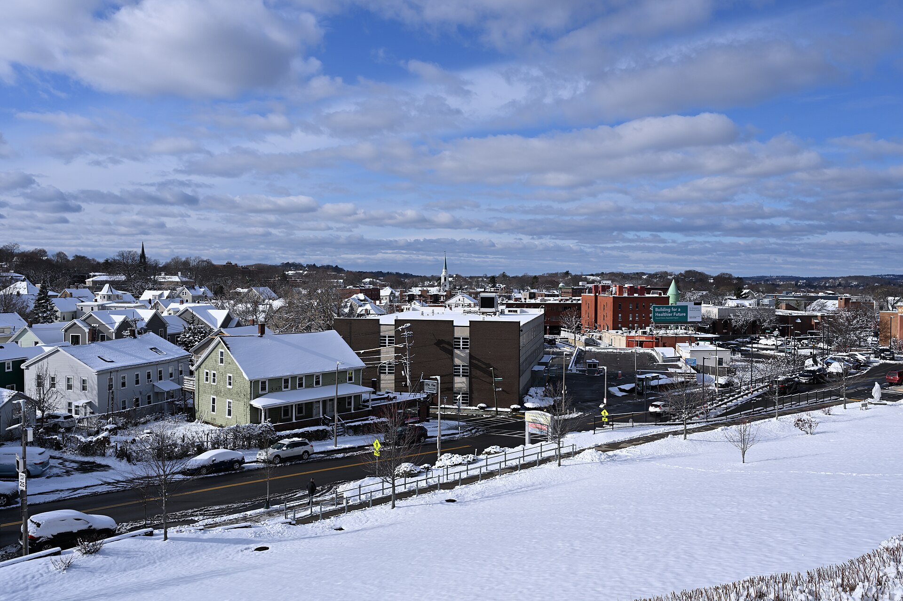
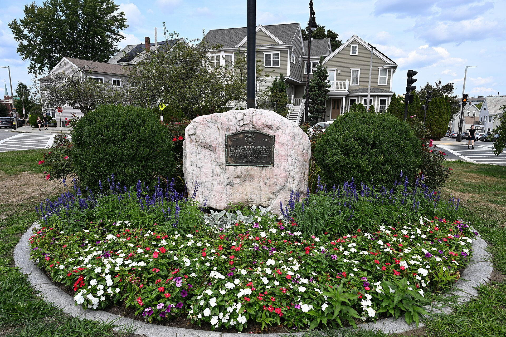
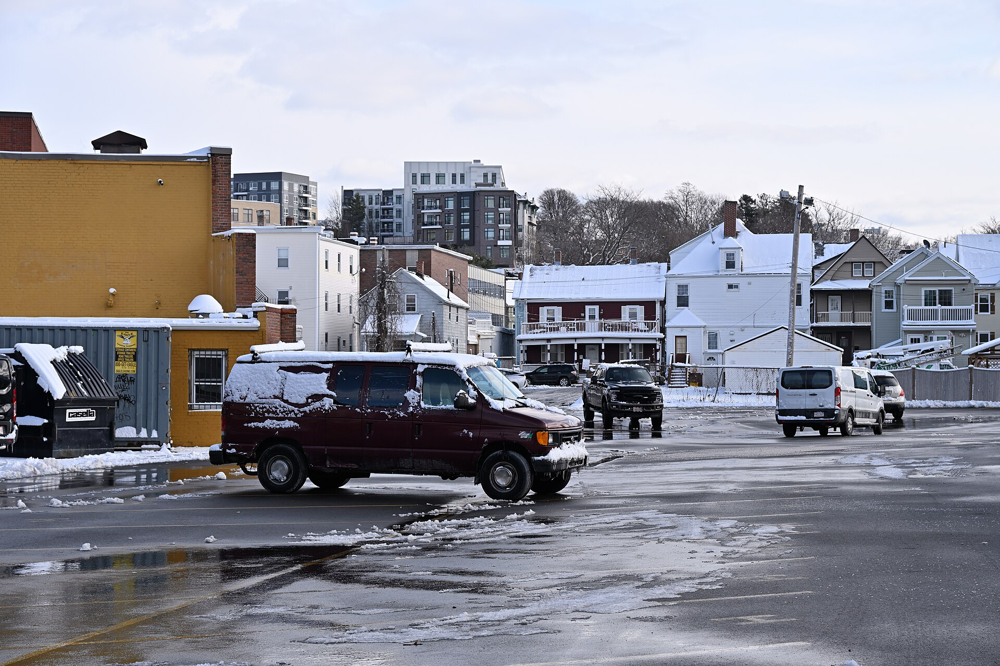
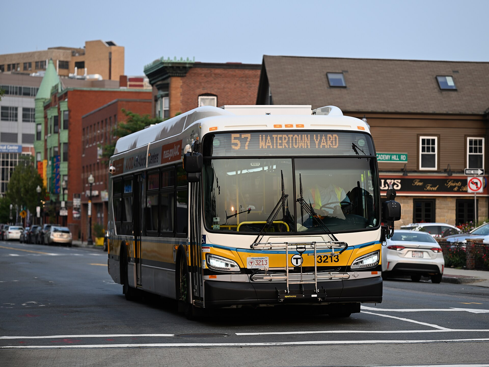

The river bends like a slow silver thought Through Brighton's quiet, tree-lined lane, And joggers pass where the light is caught In ripple-brown, and coming rain.
Coffee steam and bakery doors aglow, A triple-decker stairway climbing up, B-branch rumbling soft as winter snow — Brighton wakes, and fills her coffee cup.
Maple leaves keep gold on every curb, The pennants of a Saturday night game, Overhead the signal boxes curve — Brighton dreams, and Boston burns the same.



